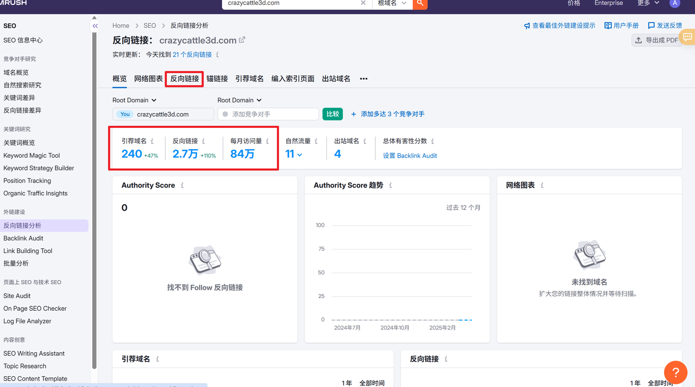
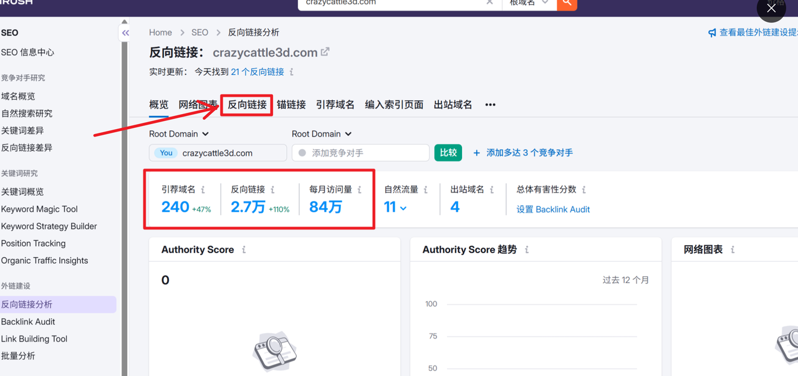
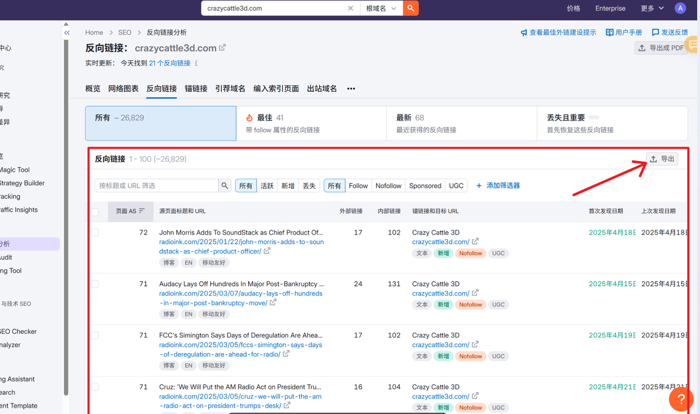
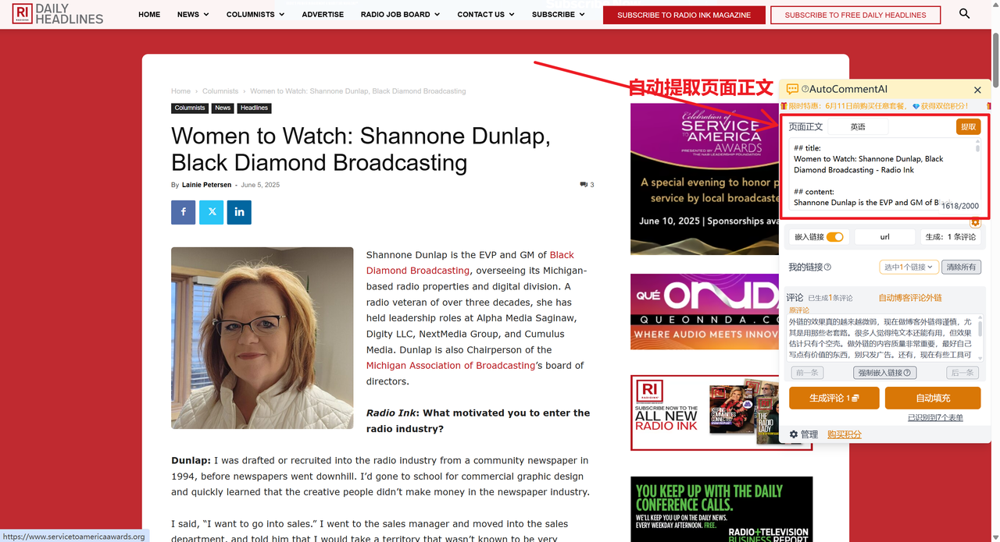
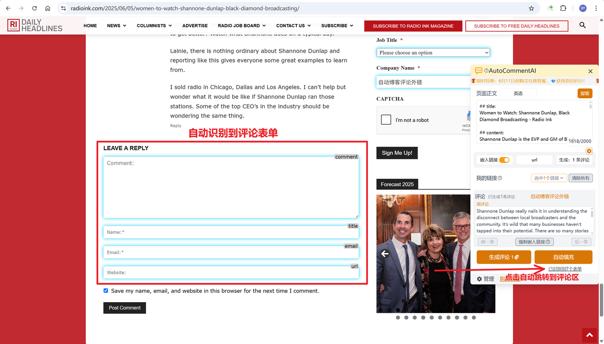
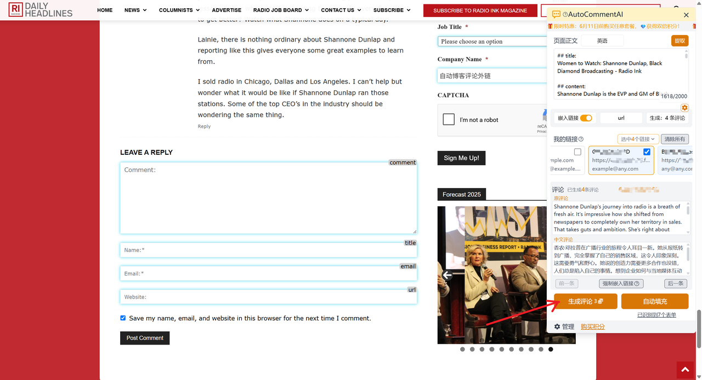

最近看到很多朋友问怎么找外链、怎么发外链。
其实cafe网站论坛里已经有很多这类帖子，但是我看了下，大多数还是说的比较粗略.
很多刚开始做站的朋友，看了可能还是不好理解和操作。
很多操作细节对于已经熟悉的人来说，觉得很简单、甚至都不会注意到，但是对于刚开始起步的新手小白来说就会卡半天。
虽然我个人经验也有限，但是在找外链、发外链这方面也算有些实操经验，所以决定写一篇比较详细的实操文章，希望能帮助到有需要的朋友.
外链有很多种，Guest post、论坛评论、博客评论、导航提交类、个人主页类等等，还有一些大的科技媒体文章，链接交换等等。这里面有很多需要花钱购买，而且价格不菲，几十美金、几百美金都有.
最适合普通人操作的就是博客论坛评论外链了，这类外链虽然相对来说权重没那么大，但是胜在容易获取、容易操作、量大、成本低，可以说是我们初期推广网站的最好选择了.
好了，废话不多说，下面正式进入实操环节。
一、如何获取外链
1. 核心工具
常用的外链反查工具主要有 Ahrefs 和 SEMrush，我自己经常用的是 SEMrush，Ahrefs 也可以，看你的使用习惯。
这两个工具正版都挺贵的，从经济实惠角度考虑的话没必要买正版（当然支持正版肯定是最好的），某宝或某鱼上买的足够用。
2. 竞品外链反查
拿最近很火的 crazy cattle 3d来说，目前排名第一的是 crazycattle3d.com，我们就以这个站为例，通过他来查找外链。
- 在 semrush中，找到反向链接分析工具,输入crazycattle3d.com，首先会看到域名的概览。这里可以看到 crazycattle3d.com 在短短不到一个月时间内已经获取了 2.7 万个个外链，引荐域名也有 240 个，这就是为什么他能拿到排名第一，每月 84万访问量的主要原因。

- 查看具体外链
我们进入反向链接标签页（或者直接点2.7万那个数字也行），查看具体的外链情况.

这里列出了网站具体有哪些外链，数据非常细致。页面上列出的字段不全，如果要看全部的字段,需要将数据导出。具体导出方法是点击右上角的导出字段，可以导出成csv 或 xlsx 都行。

可以看到crazycattle3d.com有很多高质量的外链，靠前面的外链评分都很高，后面四五十分的也不少,这些都是非常宝贵的高质量外链，可能是被人辛辛苦苦积累了很长时间积累起来的，我们通过这种方法直接就能拿来为我所用，岂不是很香.
- 筛选过滤
后续，你可以将数据导出成excel 或导出到飞书中进行进一步的处理过滤，筛选出高质量的外链.
好了,这基本上就是通过对标网站反查外链的主要操作了。
通过这种方式可以轻而易举地获取到大量外链.接下来就是如何发外链，以及如何高效地发外链了。
- 链轮挖掘法
这里再额外补充一个小技巧,我们获取到一个外链后（通常是博客、论坛等），去看他的评论区，通常能够看到已经有很多其他的网站或竞争对手在这里留下了一些外链，那么这些网站其实又可以作为我们反查外链的来源。
这样就循环起来了：查到更多的外链,然后通过外链有查到更多的对标网站。这么一看，外链获取其实是很简单的事。
二、如何发外链
通过前面的步骤，我们已经有了很多外链，通常游戏站的外链大多是博客论坛评论类的外链，也就是我们在博客论坛的评论区留下评论，在评论中插入我们的链接，或者很多博客论坛的评论会预留字段专门让人留外链。
1. 核心工具
这里我们需要用到一个辅助发外链的浏览器插件AutoCommentAI，这个插件能够自动识别网页中的正文内容，然后通过 ai 自动生成自然生动、切题的评论（支持在评论中嵌入推广链接），最后一键自动填充评论到表单中，整个过程只需要点击几次鼠标即可完成评论的生成和提交，能够极大节省时间、提高效率
2. 筛选可用外链
对于前面获取到的外链，并不是所有的外链都适合我们发。
有的非博客评论类的外链可能是购买的外链、有的是站长自己的其他网站，还有的外链是在科技媒体文章自发引用的（这类也没法直接获取）、有的外链可能已经失效等等，这些我们都没办法主动提交，或者在短期内搞不定的，都要直接排除掉。具体地：
1）博客论坛评论类的外链基本都可以发
2）WordPress 架构（占比76%）、开放评论区、允许超链接
3）排除:隐藏链接、JS跳转、自然引用、失效链接
3. 生成评论
1）进入某一个具体的博客或论坛页面
仍然以前面我们通过 crazycattle3d.com 反查获取到的外链为例，第一个外链是：
https://radioink.com/2025/06/05/women-to-watch-shannone-dunlap-black-diamond-broadcasting/
我们在浏览器中直接粘贴这个 url进入页面。
可以看到页面右侧的 AutoCommentAI的侧边图标。
点开这个图标就能看到操作面板。可以看到插件已经自动提取了页面的正文内容到插件的文本框中。

2）查看评论区
插件会自动识别页面上的评论表单，点击图中箭头所指，会自动跳转到评论区。

有时候，页面的评论表单默认会折叠隐藏，或者插件没识别到，这时候我们手动将页面滚动到下方评论区。
我们需要观察一下评论区，看看别人的评论是怎么留链接的。
如果所有评论的内容中都没有链接，说明这个论坛评论不允许在评论内容中直接插入链接，这种一般会有专门的字段让你留链接，字段名一般叫website、URL 等。
如果评论区中有评论内容中带链接，那我们也在评论中带链接。
总之不是一上来就简单粗暴地发评论，先观察一下别人是怎么评论的，怎么留链接的。
回到我们的示例，可以看到评论内容中都是不带链接的，说明这个网站不允许直接在评论内容中留链接。
但是我们点击每条评论的标题其实能跳转的，也就是说这个网站专门预留了字段让评论者留外链。
我们继续看评论表单,有四个字段：评论内容、标题(名称)、邮箱、网站（可以看到插件已经自动识别出了这几个表单字段），其中网站这个字段就是我们可以留链接的地方。
其实大部分博客论坛评论区的评论表单也基本都是这样，会有一个 website 或 URL 字段专门让人留链接。其实这也是论坛吸引人参与评论的策略。
3）生成评论
接下来我们通过AutoCommentAI插件自动生成评论.
因为这个网站不允许直接在评论内容中留链接.
所以我们在插件操作面板中，把“嵌入链接”选项关闭（有的网站允许在评论中嵌入链接，我们就可以将这个选项打开）,然后选择要生成的评论数量（一般是 1条，如果你要同时推广多个网站可以选择多条）。
最后点击底部的“生成评论”按钮就能生成对应数量的评论了。
插件会根据帖子内容、语言以及我们的网站的功能描述，生成符合帖子上下文语境的评论,并在评论中自然地插入我们的网站链接。

4. 提交评论
直接点击插件的“自动填充”按钮,就会自动把你的网站的信息以及评论内容填充到评论表单中。
最后点击提交按钮完成评论的提交。
5. 观测记录
提交评论后并不是就什么都不用做了，有的网站提交后并不会立马显示在评论区，会对评论进行审核。本文中使用的示例网站是提交后立马就能显示的（有点出乎预料，这么高评分的外链竟然这么容易就搞到了）。
提交外链后，我们要做好对应的记录，可以整理一个专门的表格用来记录，随着你发的外链越来越多，会形成自己的外链资源库,而这就是你的核心竞争力。
对于那些要审核的网站，我们隔天或隔几天去看一下，如果没有审核通过，也不用纠结,直接把这个网站pass掉，外链多的是，不行就换.
最后总结一下，外链其实不难，都是苦活累活，很多事其实没有想象的那么难，只要你去做就有机会.